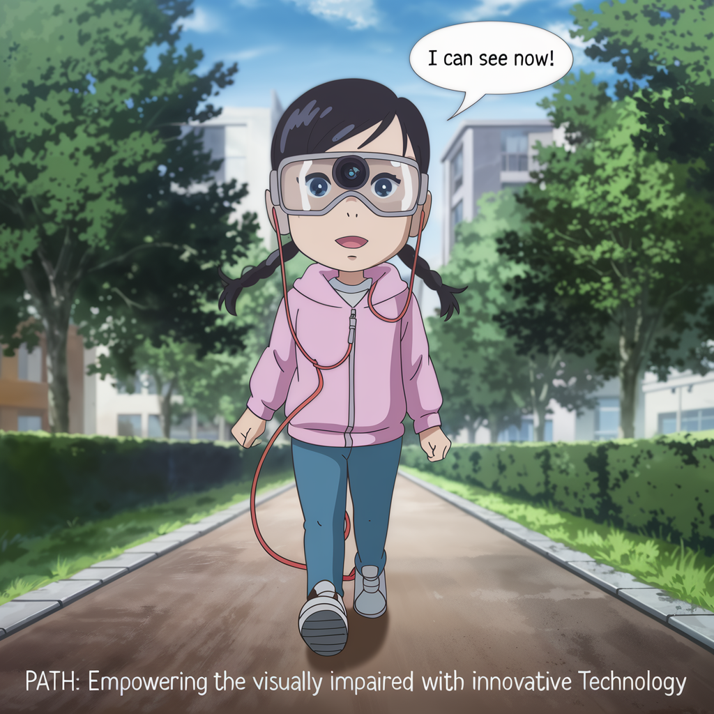
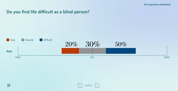
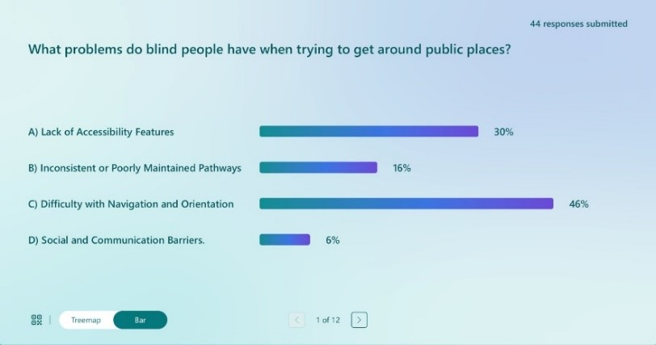
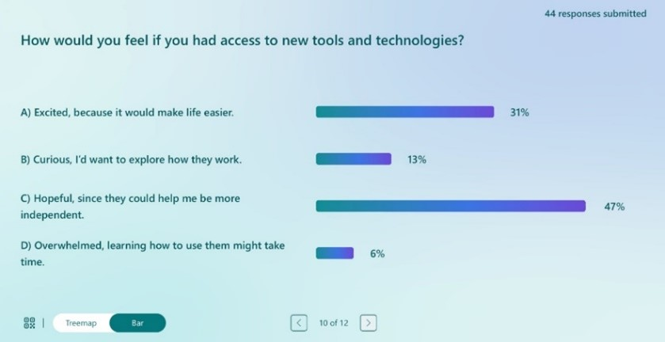

Concept, Visions and Goals
Our mission is to create a world where visually impaired individuals can navigate confidently. With advanced AI and real-time navigation, our product brings independence to those in need. Our goals include continuous innovation, reaching more users, and fostering an inclusive community.

Generating Knowledge and Awareness
We conducted surveys to understand the challenges faced by visually impaired individuals in public spaces. Respondents highlighted the need for real-time navigation assistance and improved safety. This feedback inspired the development of our assistive technology product.



Generating Ideas
Strengths: High-tech, Promotes independence, User-friendly
Weaknesses: Expensive to produce, Technological complexities
Opportunities: Expanding market, Partnership potential, Technological advances
Threats: Competition, Regulatory challenges, Economic shifts
Approach to Innovation
Product Description: VisionDirection smart glasses are designed to assist people who are visually impaired. These glasses feature a camera that scans the surroundings and provides audio instructions through headphones, allowing users to navigate safely and confidently.
Product Specifications:
- Camera: Small, integrated camera for real-time environment scanning.
- Audio Feedback: Comfortable headphones that deliver clear, descriptive instructions of the surroundings.
- AI Technology: Advanced AI that processes the camera feed and gives accurate directions.
- Voice Commands: Hands-free control through simple voice commands.
- Lightweight Design: Durable, lightweight frame for all-day comfort.
- Battery Life: Provides up to 12 hours of continuous use before recharging.
- Bluetooth Connectivity: Connects to a smartphone for enhanced features and customization.
- Durability: Built to withstand daily wear and tear.